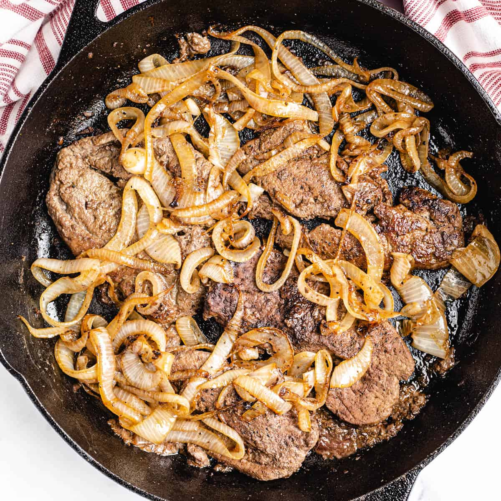

Liver and Onions

Ingredients
- 2 pounds sliced beef liver.
- ¼ cup butter, divided.
- 2 large Vidalia onions, sliced into ringsy.
- salt and pepper to taste.
Directions
- Step 1
- Gently rinse liver slices under cold water and pat dry with paper towels. Place in a shallow dish; pour in enough milk to cover. Let stand while preparing onions, or set aside for longer if you have time. Soaking will remove any bitterness.
- Step 2
- Melt 2 tablespoons of butter in a large skillet over medium heat. Add onion rings; cook and stir in butter until tender and soft, about 3 to 5 minutes. Transfer onions into a bowl and set the skillet aside.
- Step 3
- Place flour on a plate; season with salt and pepper. Drain milk from liver and coat liver slices in flour mixture.
- Step 4
- Melt remaining 2 tablespoons of butter in the same skillet; increase heat to medium-high and fry coated liver slices until lightly browned, about 3 to 4 minutes on each side. Return onions to the skillet and reduce heat to medium; continue to cook until onions are heated through and liver is slightly pink inside, or longer to suit your taste.
Back To Top
Back To Main Menu